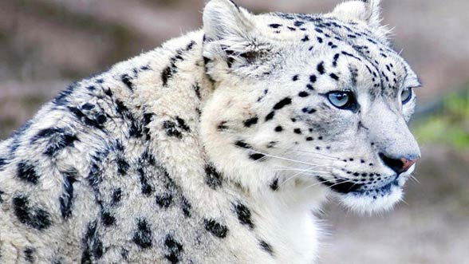

Climate Change
Climate Change
Climate change refers to the rise in average surface temperatures on Earth. An overwhelming scientific consesus maintains that climate change is due primarily to the human use of fossil fuels, which releases carbon dioxide and other greenhouse gases into the air. The gases trap heat within the atmosphere, which can have a reange of effects on ecosystems, including rising sea levels, severe weather events, and droughts that render landscapes more susceptible to wildfires.
Climate change is one of the defining issues of our time. It is now more certain than ever, based on many lines of evidence, that humans are changing Earth's climate. The atmosphere and oceans have warmed, accompained by sea-level rise, a strong decline in Arctic sea ice, and other climate-related changes. Climate change is real, and it is really something serious that people downplay a whole lot. The problem is that most people don't really understand what it really is, and what causes it. The truth is, the climate is changing each and every day. There are many different problems that are leading to our climate change, some of them having to do with the Greenhouse Effect, and other changes are occurring due to human activity and solar irradiance. The earth is becoming hotter, whether we want to admit it or not.
Causes of Climate Change
Climate change is a long-term shift in weather conditions identified by changes in temperature, precipitation, winds, and other indicators. Climate change can involve both changes in average conditions and changes in variability, including, for example, extreme events.
The primary cause of climate change is the burning of fossil fuels, such as oil and coal, which emits greenhouse gases into the atmosphere-primarily carbon dioxide. Other human activities, such as agriculture and deforestation, also contribute to the proliferation of greenhouse gases that cause climate change.
Natural Causes

The Earth's climate can be affected by natural factors that are external to the climate system, such as changes in volcanic activity, solar output, and the Earth's orbit around the Sun. Of these, the two factors relevant on timescales of contemporary climate change are changes in volcanic activity and changes in solar radiation. In terms of the Earth's energy balance, these factors primarily influence the amount of incoming energy. Volcanic eruptions are episodic and have relatively short-term effects on climate.Changes in solar irradiance have contributed to climate trends over the past century but since the industrial Revolution, the effect of additions of greeenhouse gases to the atmosphere has been over 50 times that of changes in the Sun's output.
Human Causes
Climate change can also be caused by human activiteies, such as the burning of fossil fuels and the conversion of land for forestry and agriculture. Since the beginning of the industrial Revolution, these human influences on the climate system have increased substantially. In addition to other environmental impacts, these activities change the land surface and emit various substances to the atmosphere. These in turn can influence both the amount of incoming energy and the amount of outgoing energy and can have both warming and cooling effects on the climate. The dominant product of fossil fuel combustion is carbon dioxide, a greenhouse gas. The overall effect of human activities since the industrial Revolution has been a warming effect, driven primarily by emissions of carbon dioxide and enhanced by emissions of other greenhouse gases.
Gases
There are a few of the gases that can play a part in climate change. First, you will find water vapor. This is the most abundant gas that plays a part in the Greenhouse Effect. It increases because the earth is getting warmer, and it also makes more clouds and precipitation.
Carbon dioxide also plays an important tole, even though it is one of the more minor components in our atmosphere. It can be found through a variety of different processes, including respiration, volcanic activity, deforestation, fossil fuel burning, and others. The carbon dioxide that is found in our atmosphere continues to increase, making the climate change much more prominent these days than before.
Next, methane gas also plays a part. This is a hydrocarbon gas that is produced through a variety of different processes and sources. It can be produced through decomposition of trash in landfills, and can also be found a lot around places with a lot of domestic livestock. These gases are active in the greenhouse effect, leading to more climate change.
Natural Factors
Volcanic Eruptions
A volcano releases large amount of sulphur dioxide(SO2), water vapour, dust, and ash into the atmosphere, when it erupts. These large volumes of gases and ash can trigger climate change by increasing planetary reflectivity causing atmospheric cooling. Aerosols are tiny particles that are produced by volcanoes. Aerosols remain in the atmosphere for only a few days and reflect solar energy back into the space they have a cooling effect on the world.
Ocean Currents
Variations in ocean currents can also influence climate change for short periods of time. Ocean currents move vast amounts of heat across the planet. Movement of cold water deep under the oceans towards the regions near the equator and movement of warm water near the equator back towards the pole play an important role in determining the atmospheric concentration of CO2.
Solar Radiations
The sun is the ultimate source of supply of energy for earth's climate system. A small change in the output of sun's energy can influence the climate change. These changes include changes within the sun and changes in Earth's orbit. Changes occurring in the sun can cause climate to become more warm during periods of stronger solar intensity and cool during periods of weaker solar intensity. Studies suggests that solar variations have played a role in past climate change.
Earth Orbital Changes
A slight change in the tilt of the earth can lead to climatic changes. While less tilt means cooler sumers and milder winters; more tilt means warmer summers and colder winters. These small and slow changes can lead to important changes in the strength of the seasons over tens of thousands of years.
Short-lived and long-lived climate forcers
Carbon dioxide is the main cause of human-induced climate change. It has been emitted in vast uantities from the burning of fossil fuels and it is a very long-lived gas, which means it continues to affect the climate system during its long residence time in the atmosphere. However, fossil fuel combustion, industrial processes, agriculture, and forestry-related avtivities emit other substances that also act as climate forcers. Some, such as nitrous oxide, are long-lived greenhouse gases like carbon dioxide, and so contribute to long-term climate change.
Other substances have shorter atmospheric lifetimes because they are removed fairly quickly from the atmosphere. Therefore, their effect on the climate system is similarly short-lived. Together, these short-lived climate forcers are responsible for a signficant amount of current climate forcing from anthropogenic substances. Some short-lived climate forcers have a climate warming effect('positive climate forcers') while others have a cooling effect ('negative climate forces').
Effects of Climate Change
Climate change can really have a lot of negative consequences. It is important to do something about it to help decrease the amount of change that occurs and make it not happen so fast. At some point, the earth will be too hot for people to live comfortably if we don't make some changes. It is already having and impact on the planet and animal life, and if you really don't want to see it get much worse- it is time to go green.
Change in rainfall patterns
In last couple of decades, excess rainfall, droughs, hurricanes and floods have become quite frequent. While few areas experience plenty of rainfall, then there are areas that face droughts throughout the year.
Climate forcers have climate warming effects and together are the most important contributors to the human enhancement of the greenhouse effect after carbon dioxide. This includes methane and tropospheric ozone- both greenhouse gases - and black carbon, a small solid particle formed from the incomplete combustion of carbon-based fuels ( coal, oil and wood for example).
Depletion of Arctic Ice
Though greenhouse effect is necessary for all of us to survive on this planet but an increase in greenhouse gases causes temperature to rise which can result in harmful effects to the ecology and environment. The increase in temperature of atmosphere has resulted in shrinking of arctic ice.
Wildfires

The hot and dry conditions causes wildfires to spread across dense forests and makes it a perfect recipe for disaster. They not only reduce green cover but also push forest animals towards higher altitudes. Animals that could not survive become extinct and gets their name registered in the list of endangered species.
Heat Waves
The large amount of greenhouse gases released from industries, vehicles, agricultural activities increase the concentration of CO2 and heats up the atmosphere. The increased temperature then cause heat waves and makes it difficult for people to survive.
Shifting Habitat
Prolonged heat waves, deforestation, wildfires, high temperatures have pushed plants and animals towards higher altitudes. The worst part is that most of them are not able to survive due to changing climate conditions and have moved more towards extinction.
High Temperatures
The continous increases of greenhouses gases in the atmosphere has caused temperature to rise which is called as greenhouse effect. Though greenhouse effect is necessary for survival of all of us on this planet but increase of these gases beyond a limit will only create harmful effects for us and this environment. During last century, earth's average temperature rose by 1 degree Fahrenheit which in itself is a cause of concern.
Deforestation
In tropical forests such as the Amazon, where there's abundant biodiversity, even modest levels of climate change can cause high levels of extinction. When large areas of forest are destroyed - whether razed for commercial reasons or dried by a warming climate - it's disastrous for the local species and communities that rely on them. It's also bad for all life on Earth. Dying trees emit their stores of carbon dioxide, adding to atmospheric greenhouse gases and setting us on a course for runaway global warming.
Climate Change and Water
Climate change is having serious impacts on the world's water systems through more flooding and droughts. Warmer air can hold a higher water content, which makes rainfall patterns more extreme.
Rivers and Lakes
Rivers and lakes supply drinking water for people and animals - and are a vital resource for farming and industry. Freshwater environments around the world are already under excessive pressure from drainage, dredging, damming, pollution, extraction, silting and invasive species. Climate change - combined with these stresses - makes impacts worse. Extremes of drought and flooding will become more common, causing displacement and conflict.
Oceans and Seas
Oceans are vital 'carbon sinks' - meaning that they absorb huge amounts of carbon dioxide, preventing it from reaching the upper atmosphere. But increased water temperatures and higher carbon dioxide concentrations than normal, which make oceans more acidic, are already having an impact.
Rise in Sea Level
Some parts of the earth are going to naturally be warmer than others, but as the climate changes that means that so will these areas. Warmer conditions may also lead to other areas not getting enough precipitation, and even some areas that may get more than they should. It will also cause parts of glaciers to melt, which could lead to flooding in certain areas and could make the sea levels rise.
Melting Glacires
In mountainous regions, melting glaciers are impacting on freshwater ecosystems. Himalayan glaciers feed great Asian rivers such as the Yangtze, Yellow, Ganges, Mekong and Indus. Over a billion people rely on these glaciers for drinking water, sanitation, agriculture and hydroelectric power.
Impacts on our coral reefs
Coral reefs are particularly at risk. Sensitive coral and algae that live on it are starved of oxygen, causing dramatic bleaching and possibly the eventual death of the coral. If global warming remains on its upward path, by 2050 just 5% of Australia's Great Barrier Reef - the world's largest coral reef - will remain. It's not only a tragedy for wildlife: around half a billion people rely on fish from coral reefs as their main source of protein.
Arctic and Antarctica
Arctic

Average air temperature in the region have increased by about 5 degree Celsius over the last 100 years. Recent data supports the view held by many polar scientists that there'll be almost no summer sea ice cover left in the Arctic in the next few decades. This has several implications - not just loss of habitat that polar bears and seals depend on, and knock-on effects on local people, but also dramatic changes to the entire northern hemisphere.
Antarctica
The Antarctic ice sheet is the largest single mass of ice on Earth. It covers almost 14 million sq km and contains 30 million cubic km of ice - accounting for around 90% of all fresh water on the Earth's surface. This ice plays a vitally important role in influencing the world's climate, reflecting back the sun's energy and helping to regulate global temperatures.
Climate Change and Wildlife
Global warming is likely to be the greatest cause of species extinctions this century. The intergovernmental Panel on Climate Change says a 1.5 degree Celsius average rise may put 20-30% of species at risk of extinction. If the planet warms by more than 3 degree Celsius, most ecosystems will struggle. Many of the world's threatened species live in areas that will be severely affected by climate change. And climate change is happening too quickly for many species to adapt.
Tigers

Tiger numbers in the wild have declined to as few as 3,200, largely due to poaching and habitat loss. Climate change is likely to result in increasing sea levels and further risk of fire in the already fragmented habitats where tigers live.
Snow leopards
Warming in the Himalayas has already occurred at three times the global average. This is prime snow leopard habitat and continued warming will cause their range to shrink as the treeline moves higher up the mountains. This will not only fragment and isolate snow leopard populations, but it will severely affect their prey too.
Asian rhinos
Greater one-horned rhinos live on floodplain grasslands in northern india and Nepal. They rely on the annual monsoon to bring sufficient and timely rain, to replenish the vegetation they feed on. But a changing climate could disrupt this seasonal pattern and bring regualr droughts or floods.
Orang-utans

For orang-utans in Borneo - which are already at risk because of deforestation, forest conversion and illegal hunting - one of the first effects of climate change is likely to be food shortages caused by unusual rainfall patterns. They're just one of the many species that will be affected.
African Elephants
In Africa, changes in rainfall will either bring too much rain - causing floods - or too little rain - bringing more drought and wildfires. These changes may cause some areas to simply become unsuitable for certain species to live in. African elephants can drink up to 225 litres of water each day, so changing weather patterns may mean they have to travel further in search of water - moving outside protected areas and coming into more contact with people.
Polar Bears
The Arctic is warming roughly twice as fast as the global average, causing the ice that polar bears depend on to melt away. The sea is melting earlier and forming later each year. This makes it more difficult for females to get onto land in late autumn to den, and onto the sea ice in spring to feed. It means bears are fasting for longer - dramatically reducing their body weight and physical condition and making it harder for them to survive the summer season.
Adelie penguins
Adelie penguins are 'true' Antarctic penguins, meaning they spend most of their time in Antarctica. But climate change is reducing the amount of sea ice in parts of the continent. One of the Adelies main food sources, krill, breeds and feeds under the sea ice. Reduced sea ice means reduced food for the Adelie penguins.